This week, I worked on the wheels of the mousetrap car. I hot-glued together 2 layers of cardboard and cut out a circle. For challenge day, we had to attach a device made out of popsicle sticks and rubber bands to the end of a meter stick with duct tape, and then transport a water balloon held in the device across the basketball courts. Our device failed, because the water balloon slipped out of the sides of it. If we had more time and materials, we could have added more walls so that the balloon couldn't slip out.
My design for a moustrap car minimized weight of the vehicle. It has 3 wheels, rather than 4, so that there's less traction and the car can accelerate more easily.
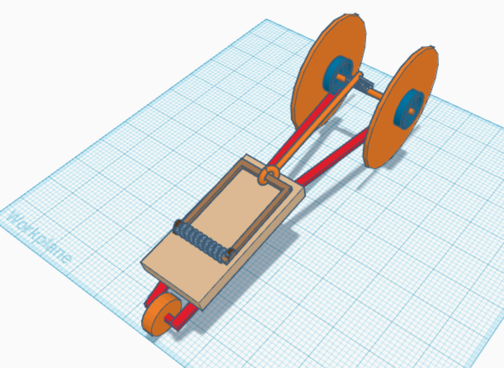
1. I learned that chemical engineering is based on using chemical reactions. It includes petroleum engineering, which has the highest median salary in engineering career.
2. We made non-Newtonian fluids(oobleck) in the small parking lot. At first, our oobleck was too thick - it would melt into a sort of sludge instead of a thinner liquid. After we added and mixed in some water, a little at a time, the oobleck became much thinner. It would react immediately to quick stabs with a plastic spoon by solidifying, but if the spoon were slowly pressed in, the oobleck would not react. I took a cup home.
3. I chose the mousetrap car as my project. I need to design and build a mini car powered by a single snap of a snap-back mousetrap. From looking up websites and resources for building mousetrap cars, I think that my approach should be to minimize weight and internal friction, but to be careful about balance in exterior friction and the size of the driver wheels.
From planning and presenting business slides this week, I learned about factors that determine a business's present worth and predict its future worth. When other groups presented, I got to consider whether or not I wanted to invest in their companies. Plus, rather than just a plain exchange of money and stakes, trying to consider the benefits of royalties and connections made things a bit more interesting.
1. Our final bridge from last semester snapped early on, where the water weight hung from.
2. For winter break, my family went to Japan. My mom left a week before the rest of us because she wanted to clean up my great-grandma's old house by the time we arrived. The house has a security system installed, and people hired for maintenence come by every once in a while, but the inside of the house had been left nearly undisturbed during the 4 years since our last visit. Luckily, there was no major structural damage, or issues with water and electricity. We visited my grandparents for a day and walked through a New Year's festival, but most of my time was spent on archery and shopping. I'd never gone during the winter before, so it was exciting to try the winter traditions.
3. I learned how business goes hand-in-hand with engineering in that it markets a solution to a problem(a product of engineering).
We're pretty much done with our bridges now. Our group made 2, and we'll turn in whichever one holds more weight in the tests. One of them is a very long triangular prism, and the other is like a railroad track with a bunch of randomly rotated rails. The first is brittle but strong, and the second is bendy but not very strong. We made a presentation for both of them, with pictures of them being built:
spaghetti bridge presentationWe're making bridges for civil engineering. One group makes one bridge to be tested by hanging a weight from it. The bridges are made out of 20 pieces of spaghetti and some wood glue. So far, we've started to glue together our first test attempt.
 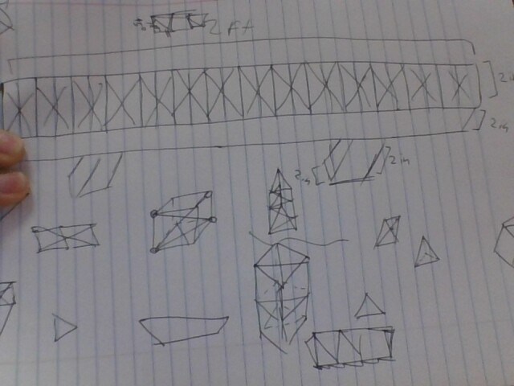
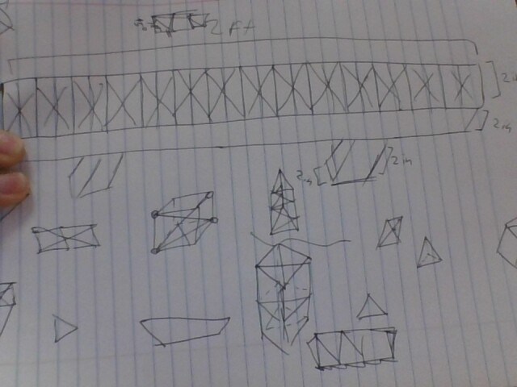
We gave code to our Arduinos to make the LEDs flash in patterns and fade in and out. Yesterday, our challenge was to come up with a solution for a bromate contaminated reservoir. The bromine and the chlorine in the water was being combined to form bromine because of the sun exposure. The correct solution was shade balls. Here's a video of one of the circuit patterns:
We got to use real, physical breadboards and wiring and all that stuff! We got 3 models to replicate on our breadboards, and my partner and I finished 2 of them. It was really cool to physically create circuits with my hands, but fitting the wires into the holes reminded me of trying to get thread into a needle.
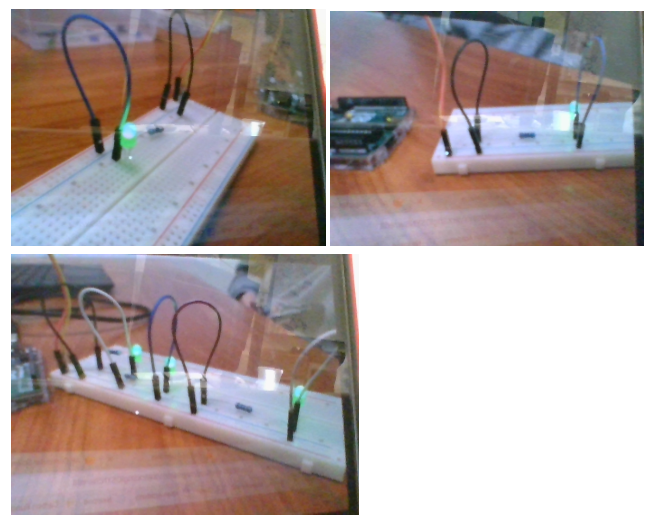We started learning about electrical engineering a couple of days ago, and so far it's a bit harder to understand than the previous subjects. But, strangely enough, they don't get paid much compared to the other engineers. Maybe the concept is hard, but it's easier once you get it. I made some breadboards in TinkerCAD, and attempted to use the info we got about series and parallels?
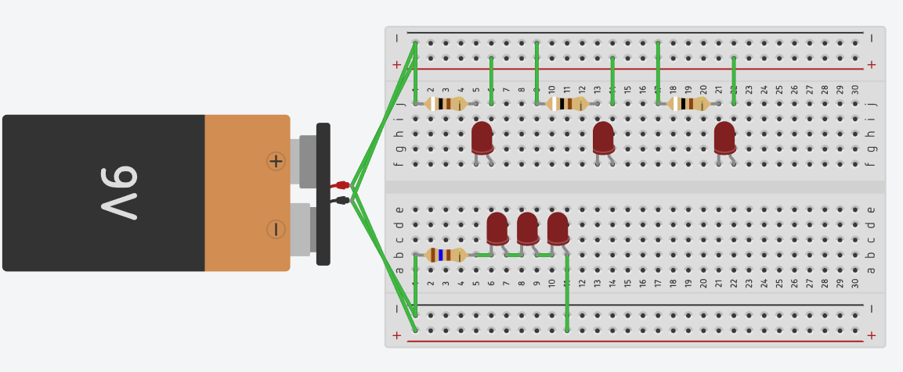In groups, we designed and modified water bottle rockets with cardboard, construction paper, flexible wood sticks, and duct tape and hot glue to hold it all together. It looked pretty good a day before the launch, but then we ended up not being able to fix the leaks in the bottle, so the rocket had to be taken apart and put back together. It looked a little messier, and it didn't fly very well, but this week was fun.
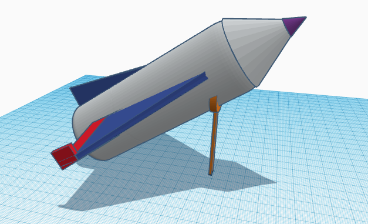 water bottle rocket BOM water bottle rocket PDF
water bottle rocket PDF
Our project this week was to dissect a computer, examine the parts, and put it back together. We parterned up and filled out a worksheet too. I've never seen the insides of a computer before, so it was pretty cool. Everything, even the little silver dots, have labels and codes in tiny print next to them!
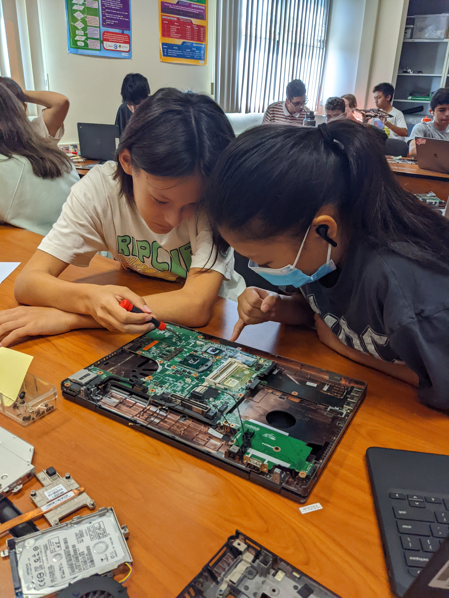I finished my animal prosthetic CAD yesterday. I designed a tail for a western fence lizard, so that it can break of its tail more than once. I wanted to embed a Spotify song, but most social media websites are blocked on this chromebook. But, YouTube isn't, so here's an interesting video:
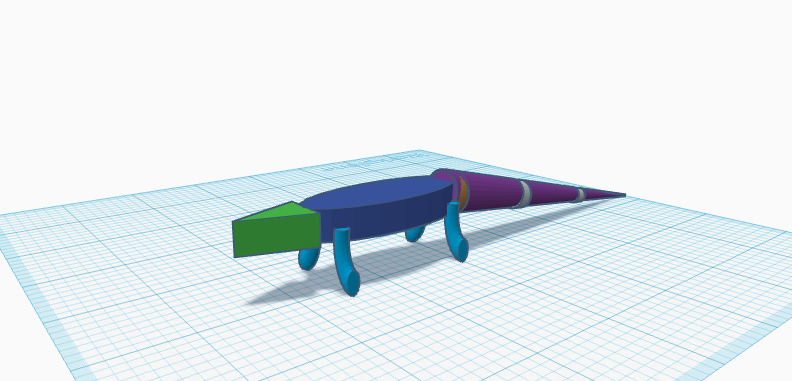We finished our Rube Goldberg projects this week, and tested them. I don't remember exactly, but only our project was able to pop the balloon within 1 try in the final run. Multiple balloons were over-inflated and popped ahead of time - I was surprised every time. I think we're finally moving onto a new unit this week.
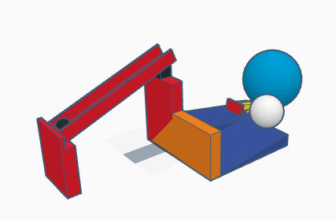 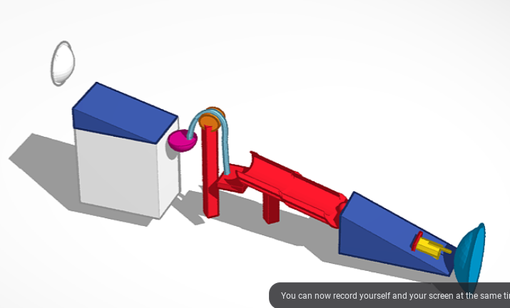 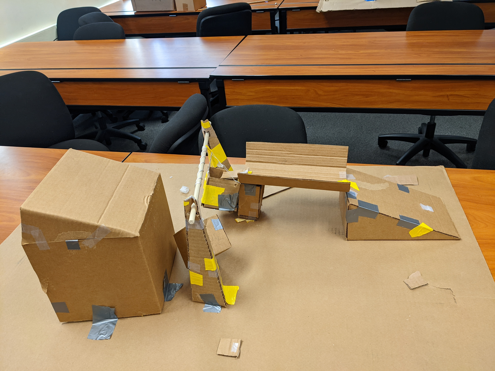Our class split into groups to work on building Rube Goldberg-style chain reactions, out of cardboard and tape. Compared to other experiences, my group isn't terrible, but it's still a little frustrating. I hope we can complete construction in time. Also, for Challenge Day, randomly assigned groups of 3 folded paper, weighed the paper with classroom objects, and tried to have them float on water for 5 minutes. My group added 185 grams, far too many in retrospect, and our paper boat sunk in 2 minutes.
 paper boat PDF
paper boat PDF
Mr. Poole is in a meeting, so we have a sub. I've heard every curse word and literally every derogatory term in this class. I like the classwork, but I could definitely do without around half of my classmates. Back to School Night starts at 6:30PM. The CBHSAA at Oranco is on Saturday, so I'm going to try to fine-tune my form during gararchery this afternoon, and pinpoint my sight settings tomorrow. The CBHSAA is more of a practice tournament than others, but I still want to shoot well. Fortunately, the crazy heatwave this past week seems to be dying away. It drizzled a bit today, and the weather report predicts rain on Saturday. Also, contradicting my belief in her immortality, QUEEN ELIZABETH HAS PASSED!
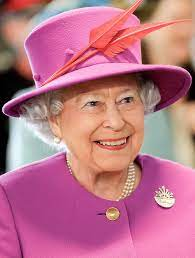On Thursday, we tried to toss and catch sticks simultaneously. A couple of my classmates are annoying. In class, we learned about lab safety and what mechanical engineering is. Yesterday, another Thursday, we were challenged to try our best to create a CAD of a kitchen appliance. Each side of the room was assigned a judge, and we needed to quickly make our CADs within the time limit. The judges were walking around and looking at our screens. We ran short of time near the end of class, but I ended up winning a Kit-Kat bar for my toaster-oven replica. My goal picture is on the left and a screenshot of my final CAD is on the right:
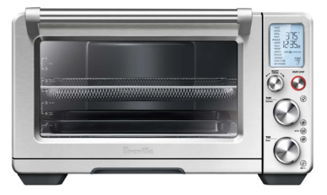 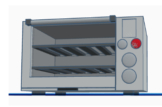Today, I was absent from class. So, I wrote this on the 22nd.